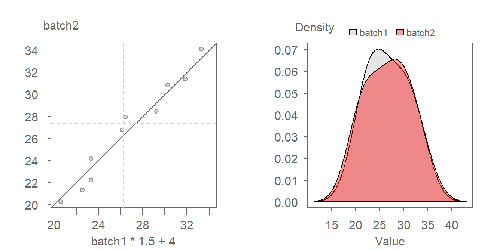

| dplyr | ggplot2 | lattice | tukeyedar |
|---|---|---|---|
| 1.1.4 | 3.4.4 | 0.22.5 | 0.2.3 |
17 Comparing distributions: The q-q plot
Let’s begin by comparing singer heights between two voice part groups: bassists and tenors. We will work off of a subset of the singer dataset which can be found in the lattice package.
library(dplyr)
library(ggplot2)
df <- lattice::singer
df2 <- filter(df, voice.part == "Bass 2" | voice.part=="Tenor 1") %>%
mutate(voice.part = droplevels(voice.part))Let’s plot both datasets side-by-side. We will jitter the points about their category groups to expose overlapping values.
ggplot(df2, aes(y=height, x=voice.part, col=voice.part)) +
geom_jitter(position = position_jitter(width = .1, height=0))
Comparing two batches of values in their entirety might prove difficult, especially if their values do not appear to differ by a whole lot–at least not visually when presented as side-by-side jitter plots. For this reason, we might find it helpful to reduce the batches down to summary statistics such as the mean or median. Doing so allows for a more objective comparison between two batches.
For example, let’s compute the median values for both batches.
df2 %>% group_by(voice.part) %>% summarise(median = median(height))# A tibble: 2 × 2
voice.part median
<fct> <dbl>
1 Bass 2 72
2 Tenor 1 68The bassists tend to be slightly taller than the tenors when compared using their median values.
This is one way to compare the batches. But is the median (or any measure of centrality) the only way to compare batches? Why not compare the top tenth percentile of values or the lower quartile of values? Will such a summary lead to a similar conclusion? We expand on this question next.
17.1 Boxplots
A boxplot gives us additional handles by which to compare batches of values.
ggplot(df2) + aes(x = voice.part, y = height) + geom_boxplot()
In addition to providing us with the median, it also allows us to compare the lower and upper quartiles. Here, the bassists are taller than the tenors by all three measures. But note that the difference in height values is not consistent.
df2 %>% group_by(voice.part) %>%
summarise(upper = quantile(height,0.75),
mid = quantile(height,0.5),
lower = quantile(height,0.25))# A tibble: 2 × 4
voice.part upper mid lower
<fct> <dbl> <dbl> <dbl>
1 Bass 2 74 72 70
2 Tenor 1 71 68 66We see that the singer heights differ by 3 inches when comparing the upper quartiles, and by 4 inches when comparing the medians and lower quartiles.
When comparing the minimum values, (these values can be extracted from the lower ends of the whiskers), we see that the difference is just 2 inches. And, interestingly, the tallest bassist is taller than the tallest tenor! So the offset between singer heights when paired up by their ordered height values is not consistent in size and in direction.
As you can see from this example, there is more than one way to compare batches of values and yet, we’ve limited our comparisons to just 5 values. So, how can we compare all values in both datasets? Answer: By comparing their quantile functions.
17.2 The empirical quantile-quantile (q-q) plot
An empirical quantile-quantile plot (or q-q plot for short) combines two separate quantile functions from different batches of values by pairing their quantile values with their common \(f\)-value covered in the last chapter. The word empirical implies that we are comparing observational values. This serves to differentiate it from the theoretical q-q plot that will be covered in the next chapter.

In the above figure, batches a and b have the same number of observations. As such, they have the same f-values. If the number of values in both batches are equal, then the plotting process is straightforward: sort both batches (from smallest value to largest value), then pair up the sorted values and plot one batch vs. the other batch.
If, on the other hand, the two batches differ in size (as is the case with our example where we have 21 tenors and 26 bassists), we won’t be able to match their sorted values.
For example, in the above graph, you’ll note that the Tenor 1 height value of 68 is associated with an \(f\)-value of 0.5, however, there is no singer height value associated with an \(f\)-value of 0.5 in the Bass 2 batch.
To overcome the problem of batch size mismatch, we limit the number of points in the q-q plot to the number of values associated with the smallest sized batch (21 in our working example). This requires that we find matching singer height values to the set of \(f\)-values associated with a batch of 21 values. There are a few ways this can be accomplished in R. The easiest way is to make use of the built-in qqplot function.
qqplot is a base package that will generate a q-q plot using the base plotting environment. It requires that the two batches be loaded as separate vector objects. It also offers the option to output the q-q plot interpolated values as a list by setting the parameter plot.it = FALSE. We then convert this list object to a dataframe using as.data.frame.
Tenor <- filter(df, voice.part == "Tenor 1") %>% pull(height)
Bass <- filter(df, voice.part == "Bass 2") %>% pull(height)
qq.out <- qqplot(x=Tenor, y=Bass, plot.it=FALSE)
qq.out <- as.data.frame(qq.out)
names(qq.out) <- c("Tenor", "Bass") # Add batch names to outputNote the use of the pull function first covered in chapter 9. It extracts a column as a vector and not a dataframe.
Also note that the qqplot function will default to qtype = 7 which references the quantile algortihm used in the quantile function.
The qqplot function will name the output columns x and y. We therefore need to reassign the voice part names to the dataframe columns in the same order that they were passed to in the qqplot function.
We can now generate the q-q plot using ggplot.
# Set the x and y limits
xylim <- range( c(qq.out$Tenor, qq.out$Bass) )
# Generate the QQ plot
ggplot(qq.out, aes( x= Tenor, y = Bass)) +
geom_point() +
geom_abline( intercept=0, slope=1) +
coord_fixed(ratio = 1, xlim=xylim, ylim = xylim) 
But note that the qqplot function can also generate a base plot with fewer lines of code.
qqplot(x=Tenor, y=Bass, asp=1)
abline( c(0,1))17.3 q-q plots vs. bivariate scatter plots
It’s important to note the difference between a quantile-quantile plot and a traditional scatter plot. With the latter, the pairing of values between variables is explicitly defined (for example average male and female income values may be paired by county). The singer data does not assume any pairing of observations (e.g. the height measurement for a singer in Bass is independent for that of a singer in Tenor 2). This is made more evident with our working example which has unequal number of singers in both groups being compared. The pairing of values in a q-q plot is constructed from the ordering of values in each batch and nothing more.
17.4 What can we learn from a q-q plot?
17.4.1 Additive offset
A valuable by-product of an empirical q-q plot is the mathematical relationship between the batches of values. If the distributions are identical (i.e. all the points of a q-q plot fall on the 45° line) then we could characterize the relationship as batch1 = batch2.
If the points follow a pattern mimicking a line parallel to the 45° line as in the following plot, then we say that there is an additive shift between batch1 and batch2.
An additive shift between batches results in an offset in density distributions with matching shape as shown in the the figure on the right.
The shift can usually be eyeballed from the plot. In this example, the shift is around 2 units or batch2 = batch1 + 2.
Adding 2 to batch1 lines the points up along the 45° line. This translates to overlapping the density plots as shown on the right.
17.4.2 Multiplicative offset
When the points follow a line at an angle to the 45° line as in the following plot, then we say that there is a multiplicative shift between the batches.

A multiplicative shift between the batches results in a change in density shapes with one batch’s density being shorter and wider (batch2 in this example) than that of the other batch (batch1 in this example).
The multiplier can be a bit difficult to glean graphically so trial and error may be the best approach whereby we multiply one of the batches by a multiplier. For example, after some experimenting, we arrive at a multiplier of 2 which seems to do a good job in aligning the q-q points along the 45° line. We thus define a relationship of batch2 = batch1 * 2.

Notice how applying a multiplier not only re-aligns the shape of both densities, but it also corrects the offset observed between both density distributions in the previous figure.
17.5 Additive and multiplicative offsets
Sometimes, you might encounter a relationship that is both additive and multiplicative in which case you should first resolve the multiplicative part of the pattern until the points are close to being parallel with the 45° line. Once the multiplicative component is taken care of, you then resolve the additive offset.

The above dataset can be decomposed into its multiplicative component (multiply batch1 by ~ 1.5),

Once you align the points parallel to the 45° line, you tackle its additive component (here, we’ll try and additive offset of 4):

The relationship between both batches can thus be defined by batch2 = batch1 * 1.5 + 4.
17.5.1 Is the relationship between tenor and bass additive or multiplicative?
Turning back to our voice part dataset, an additive shift is apparent, but a multiplicative shift not as much. To check, we’ll add 2.5 to the Bass value.
ggplot(qq.out, aes( x= Tenor + 2.5, y = Bass)) +
geom_point() +
geom_abline( intercept=0, slope=1) +
coord_fixed(ratio = 1, xlim=c(65,80), ylim = c(65,80)) + xlab("Tenor + 2.5")
The bulk of the data appears to follow an additive shift except for one or two outliers at the upper end of the distribution. These outliers should not mislead us into assuming that a multiplicative offset is warranted here.
17.6 The Tukey mean-difference plot
Our eyes are better suited at judging deviations from a horizontal line than from a 45° line. It can therefore be helpful to visually “rotate” the plot 45° so as to render what was a 45° line a horizontal line. To tackle this requires that we subtract the y-value (Bass2) from the x-value (Tenor 2), and compare this difference to the mean of the two values:
\[ Y = Bass- Tenor \] \[ X = \frac{Bass + Tenor}{2} \]
While the axes values change, the layout of the points relative to the line does not.
17.6.1 Generating a Tukey m-d plot using ggplot
We will continue with the qq.out dataset generated from the qqplot function.
md.y <- (qq.out$Bass - qq.out$Tenor)
md.x <- (qq.out$Bass + qq.out$Tenor) * 0.5
df.md <- data.frame(md.x, md.y)
ggplot(df.md, aes(x = md.x, y = md.y)) + geom_point() + geom_abline( slope=0 ) +
xlab("Mean height (in)") + ylab("Difference in height (in)")
The units on both axes are in inches. It’s clear from this plot that differences in heights are pretty much consistent across the quantiles with an additive shift of about 2.5 inches, except near the higher quantiles for a few lone points.
We can leverage this plot to help fine tune the additive offset by computing the median value from the height difference values.
md.offset <- median(md.y)
md.offset[1] 2.5The value of 2.5 is in agreement with what we eyeballed earlier.
17.7 The eda_qq function
The tukeyedar package offers an improved version of the q-q plot function that you will be encouraged to use in this course. Some of its features that you may find helpful are highlighted next.
The function can take two separate vector elements as input:
library(tukeyedar)
eda_qq(Tenor, Bass) 
It can also take a dataframe in long form as input. Note that the batch assigned to the y-axis will be the first one listed in the group’s levels. To view the levels order associated with the voice.part variable, type:
levels(df2$voice.part)[1] "Bass 2" "Tenor 1"Here, Bass 2 will be mapped to the y-axis since it appears first in the levels elements.
eda_qq(df2, height, voice.part) 
The plot includes the following features:
- Shaded boxes representing each batch’s interquartile range (mid 50% of values).
- Solid dashed lines inside the shaded boxes representing each batch’s median values.
- Lightly shaded dashed dots representing each batch’s 12.5th and 87.5th quantiles (i.e. they show the ends of the mid 75% of values).
- The power transformation applied to both batches shown in the upper right-hand corner of the plot. Power transformations will be covered later in this course.
To add the offset to the x-axis, pass "x + 2.5" to the fx argument.
eda_qq(Tenor, Bass, fx = "x + 2.5")
If you want to apply an offset to the y-axis, use the fy argument. Recall from basic alegbra that \(y = ax + b \Leftrightarrow x = (y - b) / a\). Don’t forget to reference the y variable instead of the x variable in the formula.
eda_qq(Tenor, Bass, fy = "y - 2.5")You’ll note that the function returns a “suggested” offset in the console. For example, the above code chunks returned the following suggested offset:
[1] "Suggested offsets:y = x * 0.8571 + (12.4286)"When applied to the x-axis variable, we get:
eda_qq(Tenor, Bass, fx = " x * 0.8571 + 12.4286 ")
This seems to improve little over the simpler x + 2 offset expression. Always seek a parsimonious relationship between batches when possible.
This function will also generate the Tukey mean-difference plot by setting md to TRUE.
eda_qq(Tenor, Bass, md = TRUE)Note that the offset arguments fx and fy can also be applied to the mean-difference plot.
eda_qq(Tenor, Bass, md = TRUE, fx = "x + 2.5")To learn more about the eda_qq function, see here.
17.8 So how do the batches of singer heights compare?
We’ve learned that the Tenor 1 and Bass 2 batches differ only by location (i.e. central value) and not by spread (i.e. shape of their distribution). How do the other singer groups compare? This requires making \(8 * (8-1) /2 = 28\) comparisons, something that is best done by generating a plot matrix.
# Find smallest batch size
min_size <- min(tapply(df$height, df$voice.part, length))
# Split singers into groups based on their voice parts
singer_split <- split(df$height, df$voice.part) # Split singers into groups
# Get the range of height values for all groups
rng <- range(df$height)
# Compute quantiles for each batch using the smallest range of f-values defined
# in min_size
qq_df <- as.data.frame(lapply(singer_split,
function(x) quantile(x, type = 5,
p = (1:min_size -0.5)/min_size) ))
# Generate plot matrix
plotfun = function(x,y, ...){
points(x,y,pch=18)
abline(c(0,1),col="blue")
}
pairs(qq_df, upper.panel=NULL, panel = plotfun, xlim = rng, ylim=rng) With a few exceptions, the singer height distributions differ mostly by an additive offset given that most points are parallel to the 45° line. There is one notable exception: the Tenor 1 and Tenor 2 q-q plot which seems to show a prominent multiplicative offset. We can explore this pair in greater detail. We’ll make use of our custom q-q plot function:
Tenor1 <- filter(df, voice.part == "Tenor 1") %>% pull(height)
Tenor2 <- filter(df, voice.part == "Tenor 2") %>% pull(height)
eda_qq(Tenor2, Tenor1)
It may help to understand how these batches differ by comparing their density distributions. Here, we’ll make use of another custom function, eda_dens.
eda_dens(Tenor2, Tenor1)The differences in shape between both distributions explains the multiplicative offset observed in the q-q plot. The distribution of height values is wider for the Tenor 1 group than it is for the Tenor 2 group. This suggests greater variability in height values for Tenor 1.